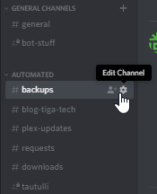
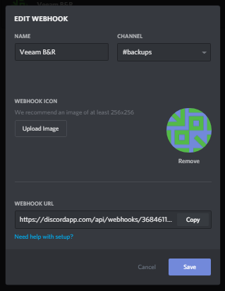
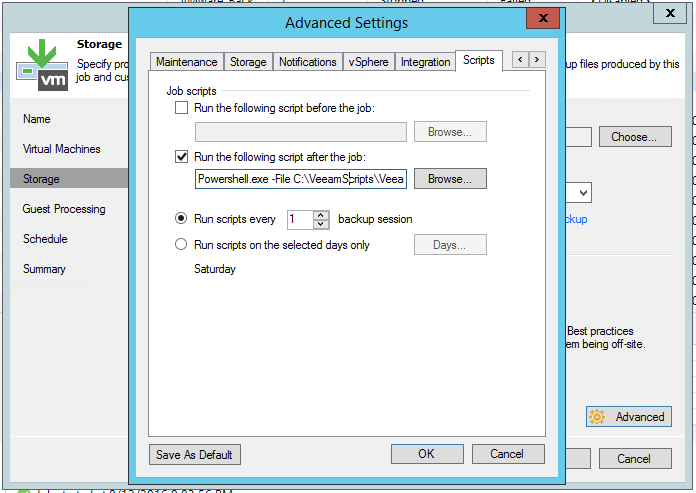

Part 2 of a Discord notifications series.
In a similar fashion to part 1, this setup has been running for a while and I’m very pleased with it’s flawless functionality.
You can read more about it here.
Background
I started off by attempting to make my own scripts for this, but that didn’t go so well, so I tried again.
Attempt 2 was using some of my own code and some code from scripts I found on the internet.
I thought this was running well as it looked good from the reports I was seeing.
A couple of months down the line I had a look in the logs, reviewed my scripts, and realised it was actually an absolute mess and frankly quite shit.
I’ve now found a set of scripts that do what I did better and have forked the project to make a number of my own improvements.
As of 06/12/2018, I’ve adapted it for Discord and re-released it under it’s own repository.
If I were Tim Cook, I would tell you that the project has been reinvented.
Update (01/02/2019):
I will keep these instructions updated and in-line with current release as much as possible, but if something is out of date then please contact me.
Setup
1. Make a scripts directory
The directory should be C:\VeeamScripts.
To make the directory run the following command in PowerShell:
New-Item C:\VeeamScripts -Type directory
2. Download the project
There may be later releases so take a look and replace the version number in the commands below with the latest if applicable.
Invoke-WebRequest -Uri 'https://github.com/tigattack/VeeamDiscordNotifications/releases/download/v1.5/VeeamDiscordNotifications-v1.5.zip' -OutFile 'C:\VeeamScripts\VeeamDiscordNotifications-v1.5.zip'
You may recieve an SSL error as in some cases winhttp uses TLS1 by default (depends on a few things), and GitHub appears to no longer accept TLS1. If you receive this error, run the following command and then re-issue the above command.
[Net.ServicePointManager]::SecurityProtocol = [Net.SecurityProtocolType]::Tls12
3. Extract and clean up
Expand-Archive C:\VeeamScripts\VeeamDiscordNotifications-v1.5.zip -DestinationPath C:\VeeamScripts
Rename-Item C:\VeeamScripts\VeeamDiscordNotifications-v1.5 C:\VeeamScripts\VeeamDiscordNotifications
Remove-Item C:\VeeamScripts\VeeamDiscordNotifications-v1.5.zip
You’ve now extracted the release and cleaned up the download.
4. Create a Discord webhook
Open Discord and go to the settings of the channel that you want Veeam to report to. I created a channel called “backups” for this service.
Click “Edit Channel”, then navigate to the “Webhooks” section and click “Create Webhook”. You’ll see something similar to the following:
As you can see mine has already been configured, but all you need to do is set the name, upload an image for the avatar if you’d like, then copy the webhook URL.
If you’d like to use the avatar that I used, here it is.
{kind=link}
5. Prepare for use
Open the configuration file:
notepad.exe C:\VeeamScripts\VeeamDiscordNotifications\config\conf.json
Older versions of Notepad don’t support LF line endings, so this file may look pretty fucked up, but it doesn’t really matter in this case. All you have to do here is replace the webhook URL with your own from step 3. Just make sure you replace only the Discord URL and nothing else.
You may also need to set your PowerShell execution policy to Unrestricted.
Set-ExecutionPolicy Unrestricted
If you don’t want to do that, replace the script path in section 5 below with the following
Powershell.exe -ExecutionPolicy Bypass -File C:\VeeamScripts\VeeamDiscordNotifications\DiscordNotificationBootstrap.ps1
Unblock the script files. The reason you may need to do this is Windows often blocks execution of downloaded scripts.
Unblock-File C:\VeeamScripts\VeeamDiscordNotifications\DiscordNotificationBootstrap.ps1
Unblock-File C:\VeeamScripts\VeeamDiscordNotifications\DiscordVeeamAlertSender.ps1
Unblock-File C:\VeeamScripts\VeeamDiscordNotifications\resources\logger.psm1
6. Configure in Veeam
Repeat this for each job that you want to be reported into Discord.
- Right click the job and click “Edit”.
- Go to the “Storage” section and click on the “Advanced” button.
- Go to the “Scripts” tab and configure as shown below. 
Powershell.exe -File C:\VeeamScripts\VeeamDiscordNotifications\DiscordNotificationBootstrap.ps1
Success! Hopefully.
Run a job and find out. This is what mine looks like.
Updates
15/02/2018
I’ve made a number of improvements to the way backups are reported, resulting in reports that look better and are much easier to understand.
15/02/2018
Minor changes, mostly to config template.
19/02/2018
Fixed transferred data and total data stats.
Embarrassingly basic error.
16/11/2018
Changed name of configuration file and cleaned up the alert sender.
30/11/2018
Fixed bugs introduced in the last release and updated instructions.
06/12/2018
Adapted my other project (VeeamSlackNotifications) for Discord with various improvements and Discord-specific changes.
01/02/2019
This release adds the job’s processing speed to the report, adds an update checker, and brings an option (disabled by default) to mention the specified Discord user when a job fails.
If you have any problems with the script, please open an issue on the GitHub project.
I always welcome feedback on my posts, please contact me if you have any. I’m also happy to answer any related questions if I know the answer.